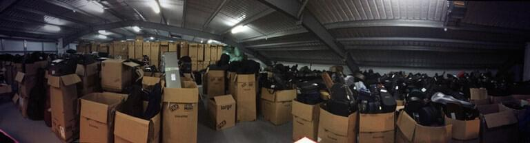

James Rhodes' Don’t Stop The Music instrument amnesty – the nationwide campaign to put musical instruments into the hands of primary school children around the UK – closed it's appeal for musical instruments last month.
It's only now that the scale of the public’s incredible response can really be judged and the good news is that it makes all the hard work of everyone involved (from Oxfam and Yodel to Yamaha and Universal Music) worth while.
The final count is still being added up but so far over 6000 instruments have been delivered to a West London warehouse where they're awaiting delivery to primary schools across the country where they can really make a difference.
Donations range from accordions to zithers, including French horns, cellos, clarinets, violins, drumkits, and much more besides. It's really an awe-inspiring sight to see, reminiscent of the memorable army warehouse camera scan at the conclusion of Raiders of the Lost Ark (albeit significantly less sinister).
For the thousands of children who'll be receiving an instrument of their own, in many cases for the first time, a comparison to Santa's workshop might be more appropriate. Not least because there’s a team of volunteers (including expert repairers and talented music specialists) working hard to give each instrument a new lease of life.
In addition to these acts of generosity, what's also been touching is the heart-warming notes of support that have come with many of the instruments. One reads: "This instrument taught me maths, literature, how to make friends and much, much more. What I learned enabled me to teach myself the guitar, which I am now teaching my twin daughters in Australia. You will get frustrated at times, but don’t give up! Have fun."
The campaign's been a fantastic project to work on, and one that we really hope will make a difference. It's been great to see Don't Stop The Music mentioned extensively in Parliament this month, in extremely positive terms. Meanwhile the support of the press and celebrities, alongside the public, has given the project a massive boost.
Impassioned responses included Tom Service from the Guardian: "Rhodes rightly says that his initiative is designed to fill the gaps left in this government’s – and the last one, and the one before that's... – failure to meaningfully live up to their well-intentioned but, in practice, hollow promises to make instrumental tuition available to every child in the country."
And Sir Paul McCartney: "If it hadn’t been for my dad giving me a trumpet on my 14th birthday, which I traded for a Framus Zenith guitar, I’d have never joined The Beatles. So drop your instrument at Oxfam and donate your instrument to James’ Don’t Stop The Music Instrument Amnesty. You might inspire a future rockstar!"
But it's not over yet! We're can't wait until later this month when the instruments are delivered to primary school where they can make a difference. And even though the amnesty has closed, the public can still support James by signing his change.org petition calling on the Government to deliver on its promise to give every child the opportunity to learn an instrument. http://www.change.org/p/nicky-morgan-deliver-the-government-s-promise-to-give-every-child-the-chance-to-learn-an-instrument